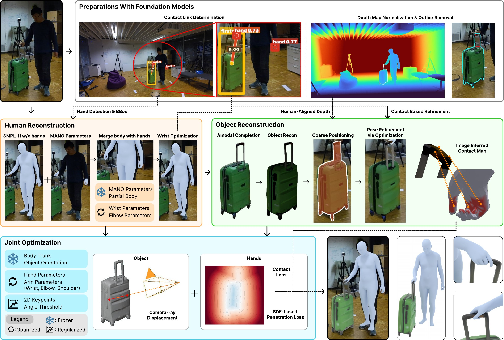
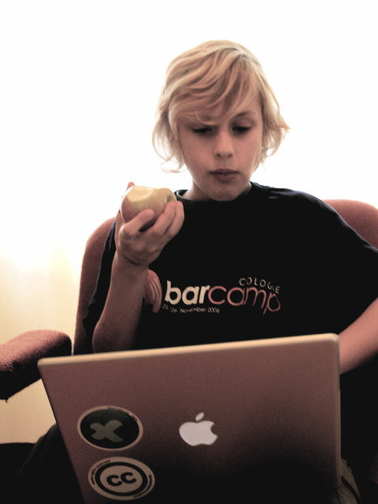
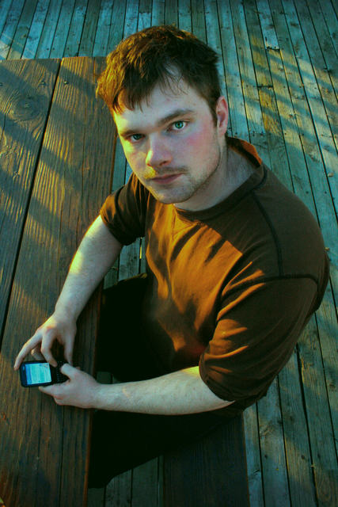
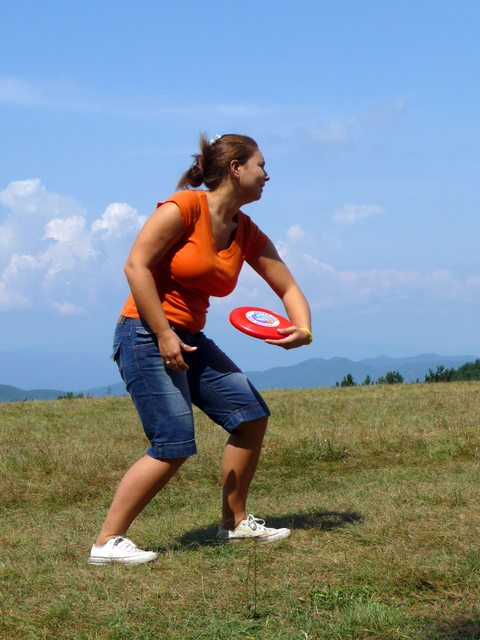
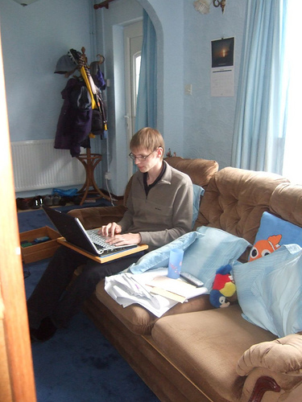
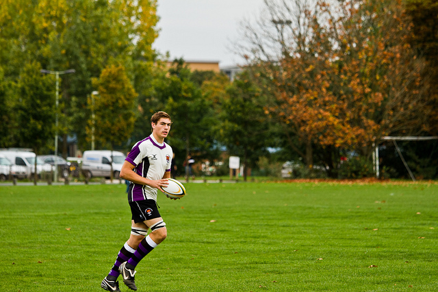

Existing monocular full-body 3D human-object interaction (HOI) methods do not combine category-agnostic object reconstruction with finger-level contact. Their hands may float off or sink into objects, breaking realism in AR/VR environments. We present GraspHOI, the first category-agnostic framework that reconstructs a full-body 3D HOI from a single image and jointly refines the arms and fingers so that the hands meet the reconstructed object surface. GraspHOI reconstructs the body, hands, and object separately with foundation models and places them in a shared metric camera frame through depth-based registration and silhouette alignment. Occlusion-aware contact correspondences seat the object against the hand, and contact-aware optimization refines shoulder, elbow, wrist, and finger rotations while anchoring the joints to the image. We find that with fingers capped near the image estimate, refining them alone is insufficient; freeing the arm removes most of the remaining hand-object gap, since in a full body the arm chain places the hand. In experiments on three datasets, GraspHOI yields more plausible hand-object contact than four baselines and better relative human-object placement than HDM and TeHOR.
GraspHOI reconstructs the human, hands, and object separately, places them in a shared metric camera frame, and refines their relative configuration through contact seating and joint optimization.






Drag a model to rotate it, scroll to zoom. Input images are from PICO-db: A. Cseke, S. Tripathi, S. K. Dwivedi, A. S. Lakshmipathy, A. Chatterjee, M. J. Black, and D. Tzionas, PICO: Reconstructing 3D People In Contact with Objects, CVPR 2025.
@article{kim2026grasphoi,
title = {{GraspHOI}: Full-Body {3D} Human-Object Reconstruction with Articulated Hands from a Single In-the-Wild Image},
author = {Kim, Semin and Shin, Haechan and Kim, Jongyoo},
journal = {arXiv preprint arXiv:2608.28386},
year = {2026},
}